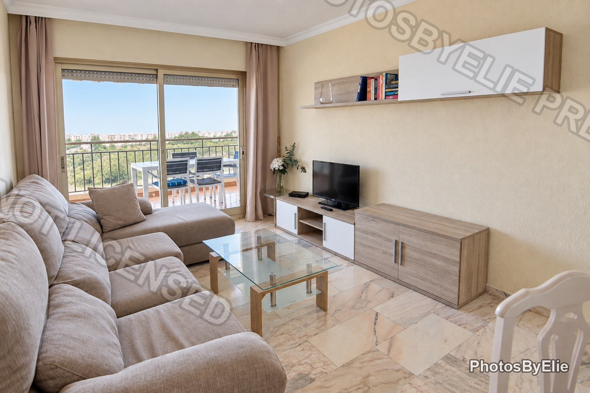
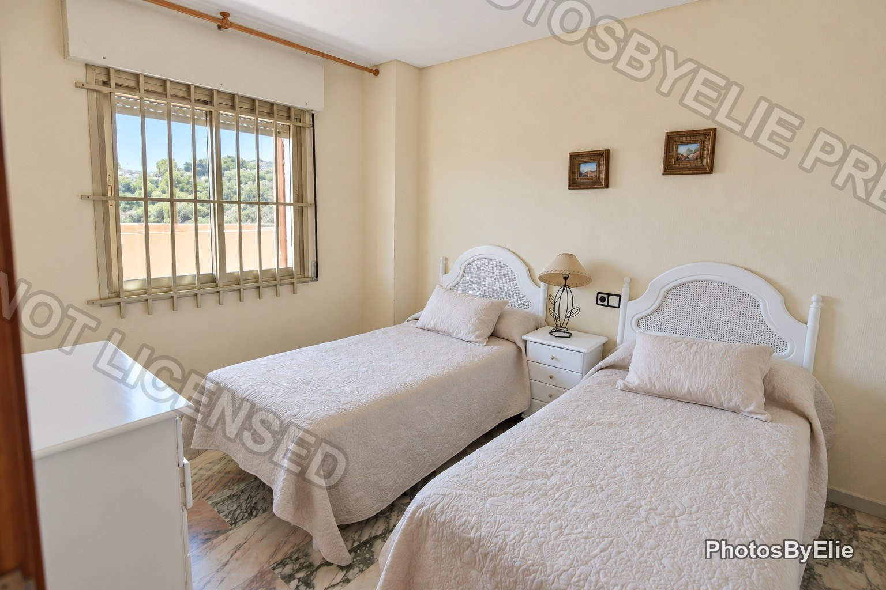
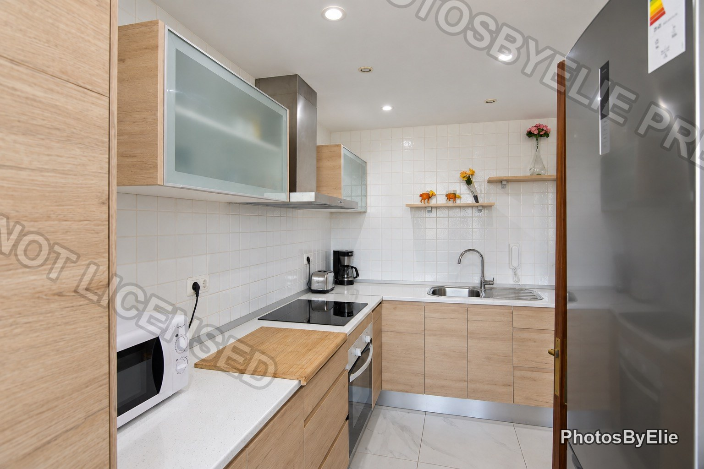
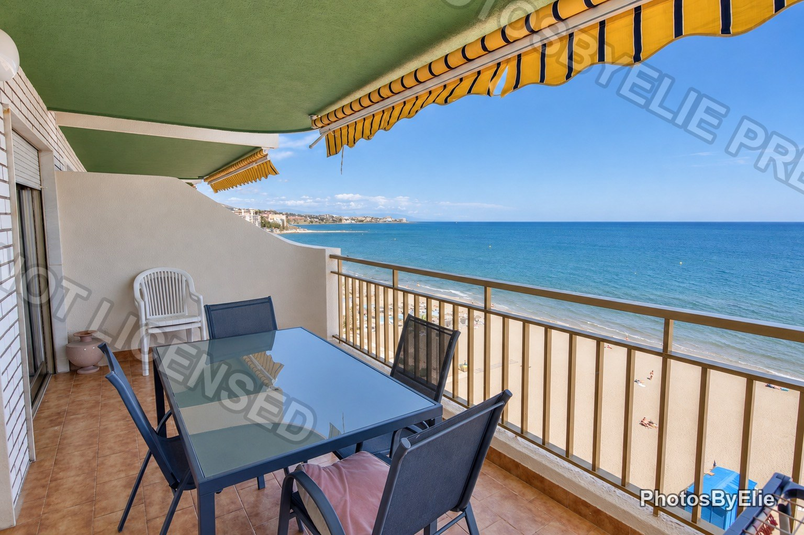

25 fotografías editadas
Interiores, terrazas, vistas y detalles arquitectónicos con corrección de color natural y verticales limpias, listos para Idealista, Kyero, Airbnb y Booking.
Alhaurín de la Torre · Málaga · Costa del Sol
Soy Elie. Fotografía de propiedades, interiores y terrazas en Málaga y la Costa del Sol para agencias inmobiliarias, villas y viviendas de alquiler vacacional.

Luz natural y conexión con el exterior.

Una visión clara de la distribución.

Materiales, equipamiento y espacio útil.

El espacio exterior y su entorno, en una imagen.
Ejemplos de mi trabajo en viviendas fotografiadas en una sesión realizada como regalo. Imágenes editadas y retocadas digitalmente, mostradas aquí como portfolio con marca de agua.
Interiores, terrazas, vistas y detalles arquitectónicos con corrección de color natural y verticales limpias, listos para Idealista, Kyero, Airbnb y Booking.
Vídeo vertical opcional de 45–60 segundos para Instagram, Reels o portales, más galería privada descargable y página de presentación para compartir con clientes.
Calendario ágil desde Alhaurín de la Torre, una ronda de revisión incluida y presupuesto cerrado antes de confirmar la fecha.
Con base en Alhaurín de la Torre (Málaga), cubro sesiones para agentes inmobiliarios independientes, agencias internacionales y propietarios a lo largo del corredor Marbella–Málaga–Nerja.
Recibirás la galería privada con las imágenes editadas en alta resolución y versión web en un máximo de 72 horas tras la sesión.
Sí. Atiendo en inglés, español y francés para agencias internacionales, gestores de alquiler vacacional y propietarios en toda la Costa del Sol.
Envíame la ubicación, el tamaño aproximado y si necesitas solo fotografía o también reel vertical. Te respondo con disponibilidad y presupuesto cerrado antes de reservar.
Cuéntame dónde está, su tamaño aproximado y qué necesitas mostrar. Confirmaremos disponibilidad, desplazamiento y presupuesto antes de reservar.